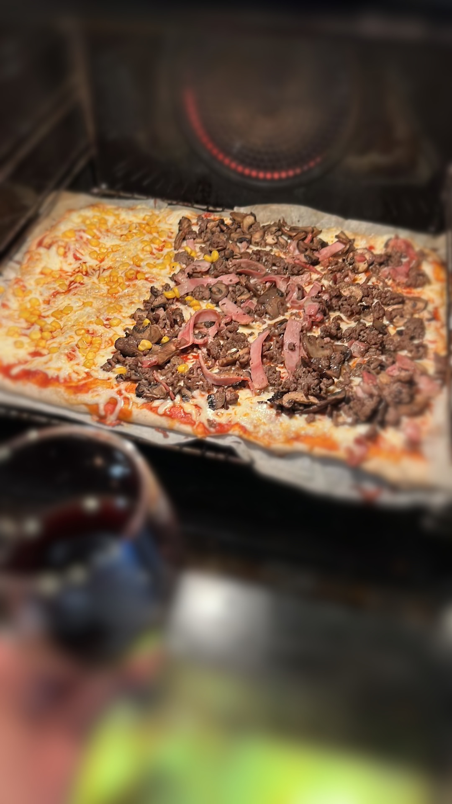

Pizza

Pizza with corn on one side, minced beef, ham, bacon and mushrooms on the other. As always a glass of wine for the amazing chef :)
Making pizza is easy! Get a pizza stone that fills the width of your oven. The stone and plenty of heat gets the job done
This recipe includes a homemade dough, but I usually pick up ready made sauce as well as shredded cheese from the store to make the job quicker and decrease the need for cleanup
I'll include Fahrenheit for the sake of American ovens, but if you want measures other than metric you'll have to calculate them yourself. I usually just use a kitchen scale for both liquids and solids.
Ingredients
Dough
- 200 grams of water
- 330 grams of flour
- 1 pinch of salt
- 1 teaspoon of sugar
- 1 tablespoon of oregano
- 1/2 tablespoon of dry yeast
Toppings
- Store-bought pizza sauce
- 1 bag of 220 grams shredded cheese (Mozarella never fails)
- 200 grams of minced beef
- 100 grams of bacon, cut in strips
- 150 grams of mushrooms
- 3 slices of ham, cut in strips
- Corn
Steps
- Mix together the ingredients for the dough and let it rise. If you're as lucky as me and own a bread maker I highly recommend the "dough" program for this.
- Turn the oven on to 250 C / 480 F with the pizza stone placed in the oven.
- Slice the ham and bacon, fry the beef and mushrooms only first at medium high temperature and then add the bacon and ham when the beef is almost cooked through and fry for a few minutes more
- Use a rolling pin to form the dough
- Cook the pizza dough for 7 minutes on the stone, then take it out
- Add sauce, cheese and toppings, and return the pizza for a few more minutes
- Enjoy!